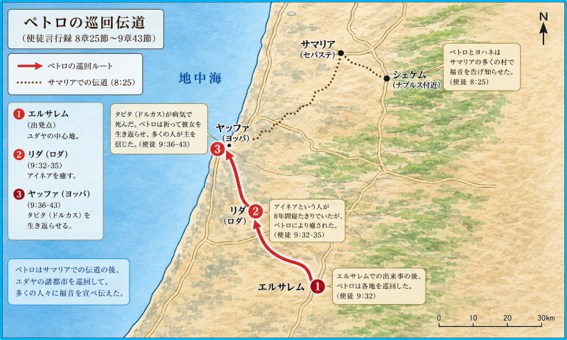

この章では、福音がエルサレムの枠を越えて広がり始める重要な転換点が描かれる。ステファノの殉教による迫害を契機として、信徒たちは各地へ散らされ、その結果、サマリアや沿岸地方にまで福音が広がっていった。
まだ本格的な異邦人宣教は始まっていない。しかし、この時期の出来事を通して、ペトロ自身もまた、「神の救いはユダヤ人だけに限定されるものではない」という方向へと導かれていくことになる。
十二使徒は、「日々の分配のことでの苦情問題」を解決するために、「霊と知恵に満ちた評判の良い人たち」7人を選んだ(6章3節)。ルカはこの7人の中で、ステファノ(6章8節~7章60節)とフィリポ(8章5~40節)の二人の働きについて詳細に記している。
初代教会の形成期において、ステファノの存在は特筆すべきものであった。彼は恵みと力に満ち、人々の間で顕著な働きをしていたと伝えられている。しかしその活動は、同時にユダヤ人社会の一部から強い反発を招くこととなった。
会堂(ユダヤ教会)に属する人々はステファノと議論を試みたが、彼の語りは旧約聖書に根ざし、かつ霊的洞察に富んでいたため、論駁することができなかった(使徒言行録6章9~10節)。その結果、彼に対する批判は神学的議論から離れ、告発へと移行していく。
彼らはステファノを捕らえて議会に引き出し、偽証者を立てて訴えた。その内容は、モーセと神への冒瀆、さらには神殿と律法に対する否定であるとするものであった(同6章11節)。これらの訴えは、当時の宗教秩序に対する重大な挑戦と受け止められたと考えられる。
これに対してステファノは、イスラエルの歴史を回顧しつつ、神の導きが必ずしも神殿制度や特定の枠組みに限定されないことを示した。そして同時に、過去の預言者たちを拒んできた先祖たちの姿と、現在の指導者たちの態度との連続性を指摘した。
この指摘は、強い宗教的自負を持っていた人々にとって看過しがたいものであった。彼らは激しく反発し、「歯ぎしりして怒った」(7章54節)と記されている。
さらにステファノが、人の子が神の右に立っているという幻を語ったとき、事態は決定的な局面を迎えた。人々は彼の言葉を冒瀆とみなし、叫び声を上げながら彼に襲いかかり、都の外へ連れ出して石打ちにしたのである(7章57~58節)。
その最期においてステファノは、イエスに自らの霊を委ね、また加害者の赦しを祈った。この態度は、福音書に記されるイエスの最期の姿と深い類似性を持っている。
この出来事は、初代教会に対する組織的迫害の端緒となった。この場には、後に使徒パウロとして知られるサウロの姿もあった。彼は当時、ステファノの処刑を支持する側に立っていた。しかし後年、自らもキリストのために苦難を受ける者となったことを思えば、この日の光景は彼の心の深い部分に刻まれていたのかもしれない。
彼はこの時、ステファノの処刑に同意していたが、この経験が後の彼に何らかの影響を与えた可能性は否定できない。
一方で、この迫害は教会の活動を停滞させるどころか、結果としてその拡大を促す契機ともなった。エルサレムから散らされた人々は各地で福音を伝え、その中にはサマリアに赴いたフィリポのような人物も含まれていたのである。
ステファノの殉教を契機として、エルサレム教会には大規模な迫害が起こった(使徒言行録8章1節)。この出来事は、教会にとって危機であると同時に、その後の展開を方向づける重要な転機ともなった。
当時の教会には、ヘブライ語を用いるユダヤ人と、ギリシャ語を用いるヘレニストのユダヤ人が存在していたが、迫害の中で主に後者が各地へと散らされていった。一方で、使徒たちはなおエルサレムにとどまり、教会の中心的役割を担い続けた。
散らされた人々は各地で福音を宣べ伝え、その中でフィリポはサマリアに下って宣教を行った。サマリアは歴史的にユダヤ人と対立関係にあった地域であり、この地での宣教は、福音が従来の枠を越えつつあることを示している。
やがて、サマリアにおける宣教の進展がエルサレムに伝えられると、教会はペトロとヨハネを派遣した。ここにおいてペトロは、福音が新たな領域へと広がる局面に直接関与することになったのである。
ペトロとヨハネは、サマリアの信徒たちのために祈り、彼らが聖霊を受けるに至ったと記されている。この出来事は、サマリア人が正式に教会の交わりへと迎え入れられたことを意味しており、ペトロの働きがその承認と確証に重要な役割を果たしたと考えられる。
また、この地で魔術師シモンが使徒の権威を金で得ようとした出来事は、初期教会における霊的権威の本質をめぐる問題を浮き彫りにしている。ペトロはこれを厳しく退け、神の賜物が人間の取引によって得られるものではないことを明確にした。
このサマリアでの経験は、ペトロにとって大きな意味を持っていたと考えられる。すなわち、従来ユダヤ人から隔てられていた人々にも神の救いが及ぶという現実を、具体的な出来事として目の当たりにしたのである。
一方で、同じ時期にフィリポはさらに南方へ導かれ、エチオピアの宦官と出会う。この出来事は、福音が個々の異邦人へと広がっていく先駆的な例と位置づけられる。宦官はイザヤ書の解き明かしを通して信仰に導かれ、バプテスマを受けたと伝えられている。
フィリポのこの働きは、ペトロ自身の直接の行動ではないが、福音が民族的境界を越えて広がっていく過程を示す点で、後のペトロの経験と密接に関係しているのである。
実際、フィリポがその後活動の拠点としたカイサリアは、やがてペトロがローマの百人隊長コルネリウスと出会い、異邦人に聖霊が注がれる決定的な出来事を経験する場所となる。この意味において、フィリポの働きはペトロの使命への準備段階としての役割を担っていたと見ることができる。
以上のように、サマリアにおける出来事は、ペトロの宣教理解を拡張させ、福音がユダヤ人社会を越えて広がる転換点の一つとなった。迫害によって生じた離散は、結果としてペトロを新たな段階の働きへと導いていくことになるのである。
「使徒言行録」の著者であるルカは、初期教会の歩みを記す中で、まずペトロを中心とする伝道活動を描き(1~5章)、続いてステファノやフィリポの働きを通して、福音がエルサレムからサマリアへと広がっていく過程を示している(6~8章)。
その間、ペトロはエルサレムからサマリアに派遣され、新しく信仰に入った人々を導いた後、各地の村々で福音を宣べ伝えつつ帰還した(8章14~25節)。
その後、彼は再び巡回伝道に出て、エルサレムから地中海沿岸へ向かう途中にあるルダを訪れた。
この時期の活動は、後にカイサリアで展開される異邦人伝道への重要な準備段階に位置づけられる。

ルダにはすでに信徒の集まりが存在しており、ペトロはそこを訪れた。そこで彼は、八年間中風を患って床に伏していたアイネアという人物に出会う。
ペトロは彼に対し、「イエス・キリストがあなたをいやしてくださる」と語りかけた。するとアイネアは直ちに起き上がり、この出来事は周囲の人々に大きな影響を与えた。ルダおよびシャロン地方の住民の多くが、この出来事を契機として主に立ち返ったと記されている(35節)。
この出来事は、ペトロの働きが単なる巡回にとどまらず、各地の信徒共同体を強めると同時に、新たな信仰者を生み出していたことを示している。
ルダに近い港町ヤッファにも信徒の共同体があり、そこにはタビタ(ギリシャ語名ドルカス)という女性の弟子がいた。彼女は慈善と施しに熱心な人物として知られていたが、病のために亡くなった(36~37節)。
ヤッファの信徒たちは、近くにいたペトロを呼び寄せた。到着したペトロは、人々の悲しみとタビタの生前の行いを目の当たりにした後、部屋に入り、祈りをささげた。そして彼女に「タビタ、起きなさい」と語りかけると、彼女は目を開けて起き上がった(40節)。
この出来事はヤッファ一帯に広まり、多くの人々が信仰に導かれた。
その後、ペトロはしばらくの間、同地に滞在したと記されている。
ルダとヤッファにおけるこれらの出来事は、ペトロの伝道活動が地理的にも内容的にも新たな段階に入っていたことを示している。すなわち、エルサレムを中心とする活動から、周辺地域への継続的な巡回へと移行し、各地に形成されつつあった信徒共同体を結び合わせる役割を担うようになっていた。また、これらの働きを通して、福音はユダヤ人社会の枠を越えて広がる準備が整えられていった。この流れはやがて、カイサリアにおける異邦人コルネリウスとの出会いへとつながり、ペトロの生涯における重要な転換点を迎えることになる。